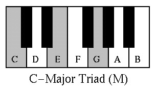
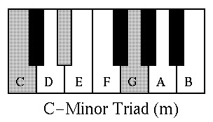
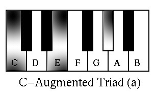
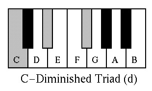

Fundamentos de la Música
Sonido
El sonido es una vibración que se propaga por el aire y llega al oído, siendo percibida como una sensación auditiva.
Cualidades del sonido
- Altura: Indica si el sonido es agudo o grave, según la frecuencia de vibración.
- Intensidad: Es el volumen del sonido, si es fuerte o suave.
- Timbre: Es el color del sonido, lo que permite distinguir instrumentos o voces.
- Duración: Es el tiempo que el sonido permanece.
Música
La música es la organización de sonidos con intención artística. También puede definirse como la combinación de ritmo, melodía y armonía.
Elementos de la música
- Ritmo: Patrón de tiempos en la música.
- Melodía: Sucesión de notas que forman una frase musical.
- Armonía: Acompañamiento que da profundidad a la melodía.
Instrumentos de teclado
Piano: Instrumento musical de teclado que produce sonido al golpear cuerdas con martillos internos.
Partes básicas del piano
- Teclado: Teclas blancas y negras (generalmente 88).
- Martillos: Golpean las cuerdas al presionar una tecla.
- Cuerdas: Vibran para producir el sonido.
- Caja de resonancia: Amplifica el sonido.
Tipos de piano
- Piano de cola: Grande, sonido potente y profesional.
- Piano vertical: Compacto, ideal para hogares y escuelas.
- Piano digital: Electrónico, simula el piano acústico.
Teclado: Instrumento electrónico con múltiples sonidos y teclas ligeras.
Sintetizador: Dispositivo que crea sonidos mediante síntesis electrónica.
Controlador MIDI: Envía señales digitales para controlar software o hardware musical.
Alteraciones
- Sostenido (♯): Eleva una nota medio tono.
- Bemol (♭): Baja una nota medio tono.
Tiempo musical
- Pulso: Latido regular de la música que organiza el tiempo.
- Tempo: Velocidad del pulso (allegro, andante, adagio).
- Compás: División del tiempo musical en partes iguales. Se representa con fracciones como 4/4, 3/4 o 6/8.
Tipos de Acordes – Escucha y Compara
Haz Click en los botones para ver como se escuchan!.
Acorde Mayor

🎵 Click en la imagen para escuchar el acorde
Acorde Menor

🎵 Click en la imagen para escuchar el acorde
Acorde Aumentado

🎵 Click en la imagen para escuchar el acorde
Acorde Disminuido

🎵 Click en la imagen para escuchar el acorde